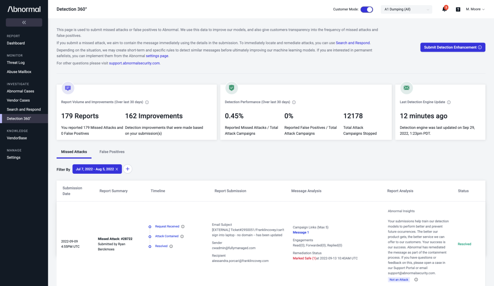
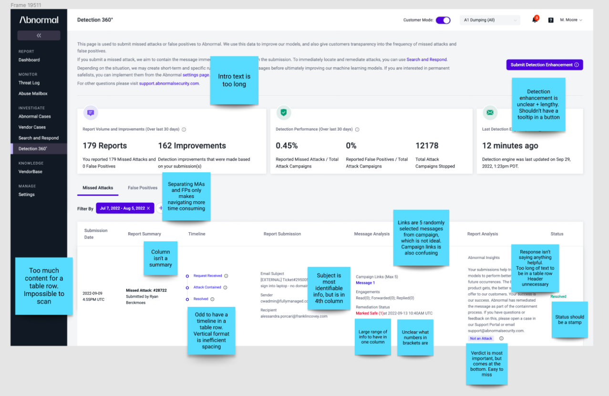
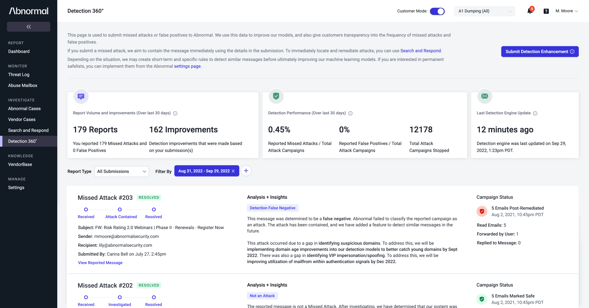
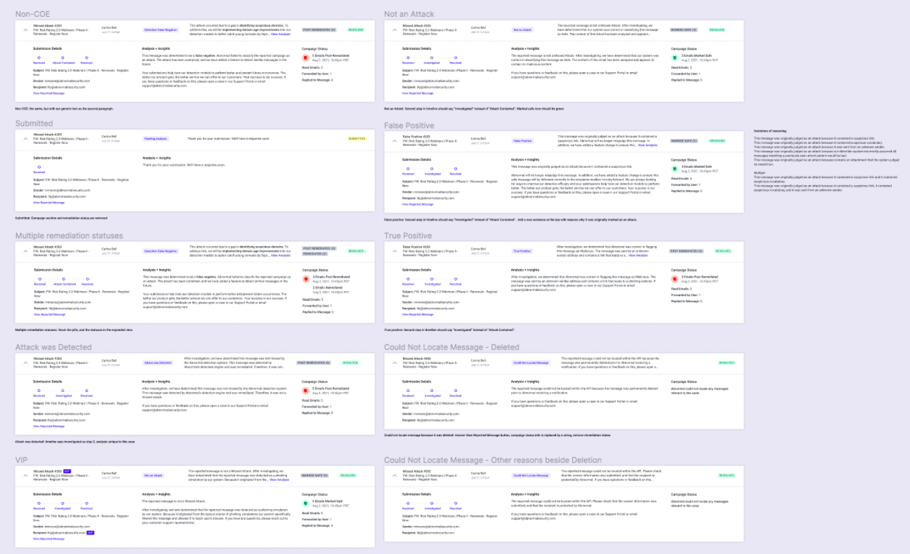
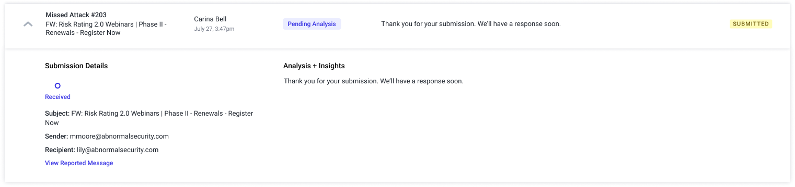
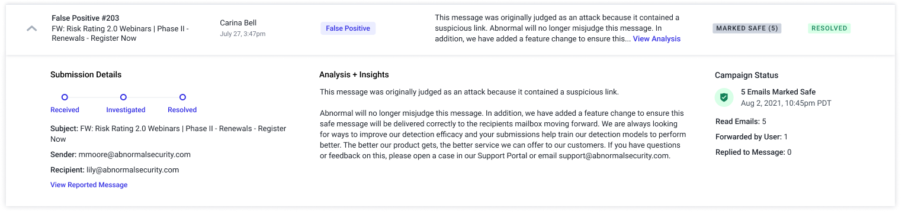
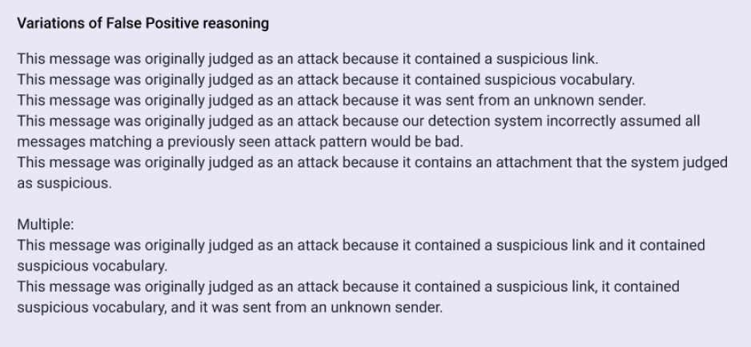
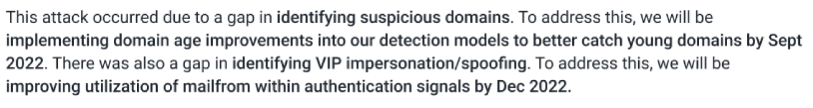
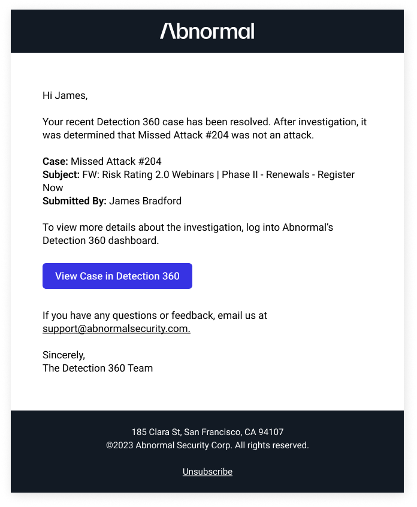

The challenge
Abnormal Security helps companies detect and block sophisticated email attacks that traditional security tools miss. But detection isn't perfect: malicious emails can get through, and legitimate emails can be incorrectly flagged.
Security teams use Search & Respond to find and remediate those emails, and Detection 360 to report detection errors and review Abnormal's investigations.
User problem
Security teams struggle to quickly and confidently remediate email detection errors, putting their organizations at risk.
Disconnected workflows and limited visibility make it difficult to investigate emails and take appropriate action.
Business problems
- High operational costs: Manual investigation responses and Cause of Error reports consumed significant internal resources.
- Limited feedback to improve detection: Cumbersome reporting discouraged users from flagging missed attacks, reducing the feedback needed to improve detection algorithms.
- Risk to customer trust: Unclear investigation outcomes made Abnormal's detection decisions difficult to understand and trust.
Defining success
I established a baseline through usability testing, then compared it with the redesigned experience.
- Remediation efficiency: Reduce manual steps, data entry, and movement between products.
- Information comprehension: Improve users' ability to find and interpret threat verdicts, statuses, and investigation findings.
- Operational efficiency: Reduce employee time spent producing customer investigation responses.
The original end-to-end workflow
Even a single missed attack could require several handoffs across systems and teams.
- Find the emailSearch for and investigate the reported message.
- RemediateTake action in Search & Respond.
- Report itManually copy email details into Detection 360.
- Wait for a responseInternal analysts investigate and sometimes prepare a manual report.
- Check backReturn to Detection 360 to find the outcome.
Research & approach
I conducted separate customer research studies across Search & Respond and Detection 360. Looking across both studies helped reveal friction within each product and across the broader remediation workflow.
What the research revealed
- Limited search options made emails difficult to find.
- Threat verdicts, remediation history, and investigation outcomes were difficult to understand.
- Remediation actions were limited, with no easy way to undo a decision.
- Reporting missed attacks required manually copying details between products.
- Investigation responses were often generic and lacked useful explanations.
False positives were reported 2.5× more often than missed attacks. Customer interviews suggested that the extra work required to report missed attacks was one contributing factor.
Research presentation
The research behind the both the S&R and Detection 360 findings is embedded below.
Design approach & constraints
I focused on targeted improvements that could ship incrementally rather than overhauling two established products. I worked with PM and two engineering pods to design within three important constraints:
Preserve Abnormal's existing remediation and classification framework.
Keep complex security metadata accessible without overwhelming users.
Automate customer responses while fitting the ways internal analysts investigated and resolved cases.
Research, design, validation, and releases overlapped across initiatives rather than following one large redesign cycle.
Improving Search & Respond
I focused on making it easier for security teams to find, understand, and remediate emails with less manual work.
Making search more robust
Search was too limited for users who needed to locate a specific message quickly. I expanded the search criteria and made email status easier to assess in results.
Making remediation status and history clearer
Security teams needed to understand not just the current verdict, but what had happened to an email over time. I made remediation status and previous actions visible alongside message details.
Providing more remediation options
The original controls offered limited actions and no straightforward way to undo a remediation. The design needed more flexibility without breaking Abnormal's platform-wide logic: a classification such as spam or graymail didn't always map to a specific mailbox folder, and configurations varied by customer.
Working with Engineering, I expanded the actions while preserving the granular classification feedback that helped Abnormal improve detection.
Connecting remediation to Detection 360
One of the biggest improvements was eliminating the manual handoff between products. Instead of copying email fields into a separate Detection 360 report, relevant information could be submitted automatically from the remediation workflow.
Redesigning Detection 360
The next challenge was helping customers understand investigation outcomes — and giving them better explanations of why detection errors happened.
Making room for detailed, automated reports
Previously, Abnormal wrote detailed Cause of Error reports manually for select cases, while most customers received short, generic responses. The goal was to automate those more useful, longer explanations for every case. But Detection 360's existing table was already crowded and wasn't designed to display that much information.

I needed to make the case list easier to scan while creating room for customers to read the full automated report when they wanted more detail.

Simplifying investigation results
I redesigned the case list as an expandable table. Users could quickly scan report types, statuses, and verdicts, then open a row for the full analysis, remediation details, and history. This kept the interface readable without sacrificing technical depth.
Testing an alternate direction
I also tested a version that displayed investigation details directly in each row. While it reduced the need to expand individual cases, it made the list substantially denser. Customers preferred the expandable version: they could scan quickly and only dive deeper when needed.

Designing for different investigation states
The same layout needed to accommodate different report types, verdicts, investigation outcomes, and remediation statuses. I explored the variations to make sure the structure remained consistent while accurately representing each case.



Designing the automated explanations
Making space for longer reports was only part of the challenge. I also designed reusable language patterns based on analysts' findings — detailed enough for security teams, structured enough to automate, and clear enough to understand.

More complex responses needed to connect multiple detection signals, gaps, and planned remediation steps into a coherent explanation of both what happened and what Abnormal would do next.

Closing the feedback loop
Customers also had to keep returning to Detection 360 to see whether a case was resolved. I designed email notifications to proactively share investigation outcomes and link back to the case.

Measuring impact
I compared the redesigned workflow with the original usability benchmark and evaluated the operational impact of automating customer responses.